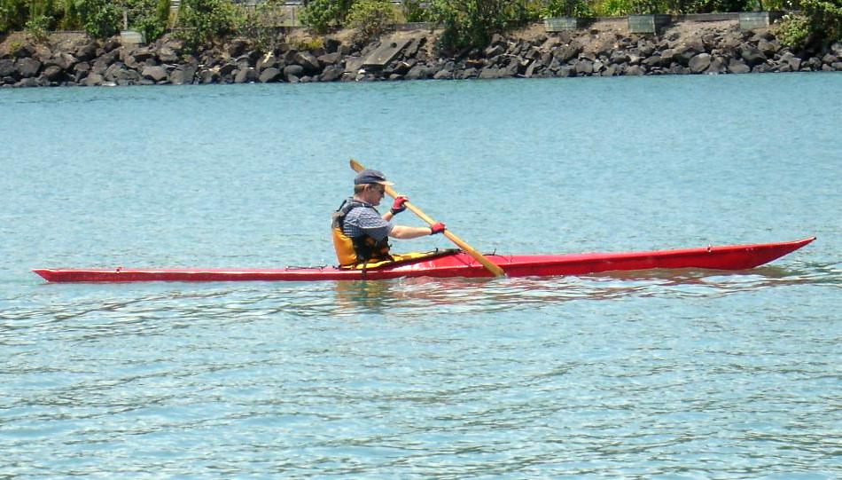

| Sea Raider LC by Brian Sloan (NZ) | Menu Previous Page Next Page |
|

Brian, from Auckland, New Zealand built his Sea Raider LC with an epoxied and pegged plywood/cedar frame. The skin is 500g/sq metre PVC. He covered the deck in one piece with a dart amidships. He then folded the edge a few times on itself,
incorporating a nylon rope into one fold, and glued that to the gunwales to form an integrated "rub strip". Use the {Back} key to return.
|
|